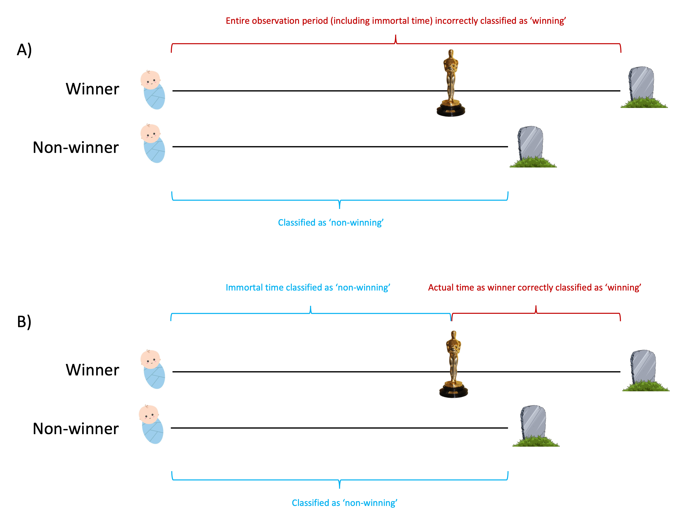

Immortal time bias - “The fallacy that never dies” (Part 1)
In 2001, a paper published in the Annals of Internal Medicine reported that Oscar winners had a longer life expectancy - by about 4 years - compared to their less successful peers. The authors conclusions were that:
“The association of high status with increased longevity that prevails in the public also extends to celebrities, contributes to a large survival advantage, and is partially explained by factors related to success.”
The study received widespread attention in the media, with one future Oscar winner acknowledging the work in her acceptance speech.
The problem was that the reported survival advantage was illusory, and the reason for this was an invalid analysis that is not alone in the literature. As in any simple time-to-event analysis, two groups may be compared in their respective ‘survival’ times. In this study, subjects were first classified as winners or non-winners and observation time counted as their time alive. The error in this case was to consider winning status time-fixed (A), when in reality it is time-varying (B). By naively assuming it is time-fixed, we are erroneously attributing the time that a winner was in fact a loser prior to getting their gong, to their winning observation time.

This creates a distortion or bias in the exposure/treatment -> outcome association, usually in a direction that overestimates the benefit of the exposure/treatment. When proper methods are then employed, the perceived benefits are reduced or sometimes reversed. And in fact that is exactly what was found when a re-analysis of the data was conducted in 2006 - the survival advantage was calculated to be closer to 1 year and not deemed statistically significant.
In general, the observation time prior to the exposure/treatment commencing (for those exposed/treated) is considered ‘immortal’, because the subject cannot experience the outcome during this period as they have yet to receive the exposure/treatment. If you are like me, this fairly classic description of immortal time hurts my brain and so I just like to simply think of it as the period that a person’s observation time has been misclassified.
Observational research that involves time-to-event outcomes is particularly prone to immortal time bias and central to the problem is the specification of ‘time zero’ - i.e. when does the clock start? There are several examples of study design choices that can lead you down the wrong analysis path if you are not careful, and an especially pertinent one in this field is drawing contrasts between treated and untreated patients (hint: a patient is not ‘treated’ for the duration of their observation time if they were only on treatment for the last 10% of that time).
So, what’s the solution?
Time-varying covariates
I will illustrate their use in an example next week.